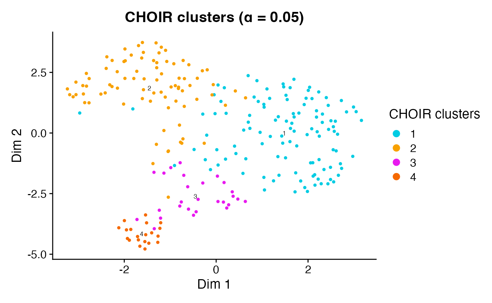

CHOIR
CHOIR.RmdInstallation
CHOIR is designed to be run on Unix-based operating systems such as macOS and linux.
CHOIR installation currently requires remotes and
BiocManager for installation of GitHub and Bioconductor
packages. Run the following commands to install the various dependencies
used by CHOIR:
First, install remotes (for installing GitHub packages) if it isn’t already installed:
if (!requireNamespace("remotes", quietly = TRUE)) install.packages("remotes")Then, install BiocManager (for installing bioconductor packages) if it isn’t already installed:
if (!requireNamespace("BiocManager", quietly = TRUE)) install.packages("BiocManager")Then, install CHOIR:
remotes::install_github("corceslab/CHOIR", ref="main", repos = BiocManager::repositories(), upgrade = "never")Alternatively, install the dev branch for the latest
updates and features (e.g., additional compatibility, improved
efficiency, etc.):
remotes::install_github("corceslab/CHOIR", ref="dev", repos = BiocManager::repositories(), upgrade = "never")Introduction
This vignette provides a basic example of how to run CHOIR, a clustering algorithm for single-cell data. CHOIR is applicable to single-cell data of any modality, including RNA, ATAC, and proteomics. It is also applicable to multi-modal data (see Advanced Options). Detailed parameter definitions are available under the Functions tab.
CHOIR is based on the premise that if clusters contain biologically different cell types or states, a machine learning classifier that considers features present in cells from each cluster should be able to distinguish the clusters with a higher level of accuracy than machine learning classifiers trained on randomly permuted cluster labels. The use of permutation testing approaches allows CHOIR to introduce statistical significance thresholds into the clustering process.
CHOIR proceeds in two main steps. First, CHOIR generates a hierarchical clustering tree spanning the network structure of the data from an initial “partition” in which all cells are in the same cluster to a partition in which all cells are demonstrably overclustered. Then, CHOIR applies a permutation testing approach using random forest classifiers across the nodes of the hierarchical clustering tree to determine the appropriate extent of each branch of the clustering tree, such that the final clusters represent statistically distinct populations.
You’ll need the following packages installed to run this tutorial:
if (!requireNamespace("scRNAseq", quietly = TRUE)) BiocManager::install("scRNAseq")
library(scRNAseq)
library(Seurat)
library(CHOIR)Example data
To demonstrate how to run CHOIR on a single-cell RNA-seq dataset,
we’ll use a small dataset consisting of mouse dopaminergic neurons,
originating from an experiment by La Manno et al. (2016), and available
through the Bioconductor package scRNAseq.
data_matrix <- LaMannoBrainData('mouse-adult')@assays@data$counts
colnames(data_matrix) <- seq(1:ncol(data_matrix))Pre-processing
CHOIR takes as input a Seurat, SingleCellExperiment, or ArchR object containing one or more feature matrices. Input data should already have undergone appropriate quality control and normalization steps (unless you are using SCTransform, see Advanced Options). Note that the exact pre-processing steps used are up to the user.
This tutorial uses a Seurat object; for details related to other object types, see Advanced Options. First, we will create a Seurat object using the read count matrix. For simplicity, here we’ll just exclude cells with fewer than 100 reads and genes present in less than 5 cells.
object <- CreateSeuratObject(data_matrix,
min.features = 100,
min.cells = 5)We will now run log normalization.
object <- NormalizeData(object)Running CHOIR
CHOIR proceeds in two main steps:
- CHOIR generates a hierarchical clustering tree.
- CHOIR prunes this tree through the iterative application of a permutation testing approach.
The two steps can be run together using the function
CHOIR() or separately using functions
buildTree() and pruneTree().
Quick start:
The CHOIR() function will run all of the steps of the
CHOIR algorithm in sequence. CHOIR is highly parallelized, so efficiency
greatly improves as n_cores is increased.
The default significance level used by CHOIR is
alpha = 0.05 with Bonferroni multiple comparison
correction. Other correction methods may be less conservative, as CHOIR
applies filters that reduce the total number of tests performed (see Advanced
Options).
We recommend using the default value of alpha = 0.05
with Bonferroni multiple comparison correction. For a more conservative
approach, the alpha value could be decreased to 0.01 or
0.001.
If your data has multiple batches, we highly recommend using CHOIR’s
built-in batch correction, using the
batch_correction_method and batch_labels
parameters (see Advanced
Options).
To use separate “count split” input matrices for building vs. pruning
the clustering tree, set countsplit = TRUE and provide
matrix suffixes to countsplit_suffix (see Advanced
Options for details).
object <- CHOIR(object,
n_cores = 2)Step-by-step:
Alternately, we can run each of the two main steps of CHOIR individually.
For users who already have a set of clusters generated by a different tool, and wish to assess whether these clusters are under- or over-clustered, start at Step 2 (see Advanced Options).
Step 1: Generate hierarchical clustering tree
CHOIR generates a hierarchical clustering tree by computing
dimensionality reduction and nearest neighbor adjacency matrices for the
data, computing clusters across a series of sampled resolutions, then
reconciling those clustering results into a consensus clustering tree
using package MRtree. When using the default parameter
max_clusters = "auto", CHOIR applies a series of
subclustering steps to ensure that the tree is not underclustered.
Specifically, the silhouette score is assessed at each new level of the
emerging tree. When the silhouette score is maximized, each cluster at
this level is subset, a new dimensionality reduction is generated, and
the cluster is then subclustered. Each of these subtrees continues to be
subdivided until the farthest pair of nearest neighboring clusters is
found to be overclustered using the permutation test approach.
The user can determine which method is used for dimensionality
reduction and batch correction, as well as supply specific parameters
for dimensionality reduction, batch correction, detecting nearest
neighbors, and modularity-based clustering, as needed. If your data has
multiple batches, we highly recommend using CHOIR’s built-in batch
correction, using the batch_correction_method and
batch_labels parameters (see Advanced
Options).
Here, we will build the hierarchical clustering tree using default parameter settings.
object <- buildTree(object,
n_cores = 2)
#> 2025-04-10 00:00:52 : (Step 1/7) Checking inputs and preparing object..
#>
#> Input data:
#> - Object type: Seurat (v5)
#> - # of cells: 243
#> - # of batches: 1
#> - # of modalities: 1
#> - ATAC data: FALSE
#> - Countsplitting: FALSE
#> - Assay: RNA
#> - Layer used to build tree: data
#> - Layer used to prune tree: data
#>
#> Proceeding with the following parameters:
#> - Intermediate data stored under key: CHOIR
#> - Alpha: 0.05
#> - Multiple comparison adjustment: bonferroni
#> - Features to train RF: var
#> - # of excluded features: 0
#> - # of permutations: 100
#> - # of RF trees: 50
#> - Use variance: TRUE
#> - Minimum accuracy: 0.5
#> - Minimum connections: 1
#> - Maximum repeated errors: 20
#> - Maximum cells sampled: Inf
#> - Downsampling rate: 0.5
#> - Minimum reads: >0 reads
#> - Maximum clusters: auto
#> - Minimum cluster depth: 2000
#> - Normalization method: none
#> - Subtree dimensionality reductions: TRUE
#> - Dimensionality reduction method: Default
#> - Dimensionality reduction parameters provided: No
#> - # of variable features: Default
#> - Batch correction method: none
#> - Batch correction parameters provided: No
#> - Nearest neighbor parameters provided:
#> - verbose: FALSE
#> - Clustering parameters provided:
#> - algorithm: 1
#> - group.singletons: TRUE
#> - verbose: FALSE
#> - # of cores: 2
#> - Random seed: 1
#> 2025-04-10 00:00:52 : (Step 2/7) Running initial dimensionality reduction..
#> 2025-04-10 00:00:52 : Preparing matrix using 'RNA' assay and 'data' slot..
#> 2025-04-10 00:00:53 : Running PCA with 2000 variable features..
#> 2025-04-10 00:00:53 : (Step 3/7) Generating initial nearest neighbors graph..
#> 2025-04-10 00:00:53 : (Step 4/7) Identify starting clustering resolution..
#> 2025-04-10 00:00:53 : Starting resolution: 0.4
#> 2025-04-10 00:00:53 : (Step 5/7) Building root clustering tree..
#> 2025-04-10 00:00:53 : Identified resolution with maximum silhouette.
#>
#>
#> Identified 3 clusters in root tree.
#> 2025-04-10 00:00:53 : (Step 6/7) Subclustering root tree..
#> 2025-04-10 00:00:54 : 5% (Subtree 1/3, 112 cells), 3 total clusters.
#> 2025-04-10 00:00:55 : 44% (Subtree 1/3, 112 cells), 5 total clusters.
#> 2025-04-10 00:00:55 : 50% (Subtree 2/3, 84 cells), 5 total clusters.
#> 2025-04-10 00:00:55 : 51% (Subtree 2/3, 84 cells), 5 total clusters.
#> 2025-04-10 00:00:55 : 79% (Subtree 2/3, 84 cells), 7 total clusters.
#> 2025-04-10 00:00:55 : 81% (Subtree 2/3, 84 cells), 7 total clusters.
#> 2025-04-10 00:00:56 : 83% (Subtree 3/3, 47 cells), 7 total clusters.
#> 2025-04-10 00:00:57 : 99% (Subtree 3/3, 47 cells), 11 total clusters.
#>
#> 2025-04-10 00:00:57 : (Step 7/7) Compiling full clustering tree..
#> Full tree has 6 levels and 8 clusters.Step 2: Prune hierarchical clustering tree
After constructing the hierarchical clustering tree, CHOIR iterates through each node of the clustering tree using a bottom-up approach. At each node, CHOIR computes pairwise comparisons of all child clusters by splitting cells into training and test sets, training a balanced random forest classifier on the gene expression data of the training set, and then predicting the cluster assignments of the cells in the test set. This yields a prediction accuracy score which represents the degree to which the two clusters are distinguishable.
In parallel, CHOIR shuffles the cluster labels and repeats the same process. Both comparisons are repeated using bootstrapped samples (default = 100 iterations), resulting in a permutation test that compares the true prediction accuracy for the clusters to the prediction accuracy for a chance division of the cells into two random groups.
This permutation test yields a p-value that determines whether these
clusters are slated to merge or remain separate. The significance
threshold used can be adjusted using the alpha parameter.
We recommend using the default value of alpha = 0.05 with
Bonferroni multiple comparison correction. For a more conservative
approach, the alpha value could be decreased to 0.01 or
0.001.
object <- pruneTree(object,
n_cores = 2)
#> 2025-04-10 00:00:57 : (Step 1/2) Checking inputs and preparing object..
#>
#> Input data:
#> - Object type: Seurat
#> - # of cells: 243
#> - # of batches: 1
#> - # of modalities: 1
#> - # of subtrees: 4
#> - # of levels: 6
#> - # of starting clusters: 8
#> - Countsplitting: FALSE
#> - Assay: RNA
#> - Layer used to build tree: data
#> - Layer used to prune tree: data
#>
#> Proceeding with the following parameters:
#> - Intermediate data stored under key: CHOIR
#> - Alpha: 0.05
#> - Multiple comparison adjustment: bonferroni
#> - Features to train RF: var
#> - # of excluded features: 0
#> - # of permutations: 100
#> - # of RF trees: 50
#> - Use variance: TRUE
#> - Minimum accuracy: 0.5
#> - Minimum connections: 1
#> - Maximum repeated errors: 20
#> - Distance awareness: 2
#> - All metrics collected: FALSE
#> - Maximum cells sampled: Inf
#> - Downsampling rate: 0.5
#> - Minimum reads: >0 reads
#> - Normalization method: none
#> - Batch correction method: none
#> - Clustering parameters provided:
#> - algorithm: 1
#> - group.singletons: TRUE
#> - verbose: FALSE
#> - # of cores: 2
#> - Random seed: 1
#> 2025-04-10 00:00:57 : (Step 2/2) Iterating through clustering tree..
#> 2025-04-10 00:00:57 : 10% (1/6 levels) in 0 min. 8 clusters remaining.
#> 2025-04-10 00:00:57 : 20% (2/6 levels) in 0 min. 7 clusters remaining.
#> 2025-04-10 00:00:58 : 30% (2/6 levels) in 0.01 min. 6 clusters remaining.
#> 2025-04-10 00:00:59 : 40% (3/6 levels) in 0.02 min. 5 clusters remaining.
#> 2025-04-10 00:00:59 : 52% (4/6 levels) in 0.03 min. 4 clusters remaining.
#> 2025-04-10 00:00:59 : 61% (4/6 levels) in 0.03 min. 4 clusters remaining.
#> 2025-04-10 00:01:01 : 71% (5/6 levels) in 0.07 min. 4 clusters remaining.
#> 2025-04-10 00:01:01 : 92% (6/6 levels) in 0.07 min. 4 clusters remaining.
#> 2025-04-10 00:01:01 : Completed: all clusters compared.
#>
#>
#> 2025-04-10 00:01:01 : Identified 4 clusters.Plot
Labels for the final clusters identified by CHOIR can be found in the
meta.data slot of the Seurat object. Other CHOIR outputs
are stored under the misc slot of the Seurat object.
head(object@meta.data)
#> orig.ident nCount_RNA nFeature_RNA CHOIR_parent_clusters
#> 1 SeuratProject 7826 3314 P1
#> 2 SeuratProject 3294 1895 P2
#> 3 SeuratProject 6776 3002 P1
#> 4 SeuratProject 7294 3192 P2
#> 5 SeuratProject 3747 1993 P2
#> 6 SeuratProject 11258 4363 P2
#> CHOIR_clusters_0.05
#> 1 1
#> 2 2
#> 3 1
#> 4 2
#> 5 2
#> 6 2After clustering has finished, we can generate a UMAP dimensionality
reduction and use function plotCHOIR() to plot a
visualization of the clusters.
# Run UMAP
object <- runCHOIRumap(object,
reduction = "P0_reduction")
#> Calculating UMAP embeddings for 1 dimensionality reductions..
#> (1/1)
#> Warning: The default method for RunUMAP has changed from calling Python UMAP via reticulate to the R-native UWOT using the cosine metric
#> To use Python UMAP via reticulate, set umap.method to 'umap-learn' and metric to 'correlation'
#> This message will be shown once per session
#> 00:01:01 UMAP embedding parameters a = 0.9922 b = 1.112
#> Found more than one class "dist" in cache; using the first, from namespace 'BiocGenerics'
#> Also defined by 'spam'
#> 00:01:01 Read 243 rows and found 50 numeric columns
#> 00:01:01 Using Annoy for neighbor search, n_neighbors = 30
#> Found more than one class "dist" in cache; using the first, from namespace 'BiocGenerics'
#> Also defined by 'spam'
#> 00:01:01 Building Annoy index with metric = cosine, n_trees = 50
#> 0% 10 20 30 40 50 60 70 80 90 100%
#> [----|----|----|----|----|----|----|----|----|----|
#> **************************************************|
#> 00:01:01 Writing NN index file to temp file /var/folders/ty/d3bmlyq53cv_6t3v60wkfr980000gr/T//Rtmp9yEUsy/file91783c2a4605
#> 00:01:01 Searching Annoy index using 1 thread, search_k = 3000
#> 00:01:01 Annoy recall = 100%
#> 00:01:02 Commencing smooth kNN distance calibration using 1 thread with target n_neighbors = 30
#> 00:01:03 Initializing from normalized Laplacian + noise (using RSpectra)
#> 00:01:03 Commencing optimization for 500 epochs, with 9286 positive edges
#> 00:01:03 Optimization finished
#> Warning: No assay specified, setting assay as RNA by default.
# Plot
plotCHOIR(object)
#> Warning: Data is of class matrix. Coercing to dgCMatrix.
This function will also overlay the prediction accuracy scores among
neighboring pairs of clusters when accuracy_scores is set
to TRUE.
plotCHOIR(object,
accuracy_scores = TRUE,
plot_nearest = FALSE)
#> Warning: Data is of class matrix. Coercing to dgCMatrix.Advanced Options
Input object types
Seurat
For Seurat objects, the default assay is used if no input is provided
for parameter use_assay. If no input is provided for
parameter use_slot, the following default slot (Seurat v4)
or layer (Seurat v5) is used:
- If
use_assayis either “RNA” or “sketch”, CHOIR will look for thedataslot - If
use_assayis either “SCT” or “integrated”, CHOIR will look for thescale.dataslot
Some Seurat v5 objects have multiple layers (e.g., “data.1”, “data.2”, “data.2”..) with different subsets of cells stored under the same assay. Currently, CHOIR requires a single layer containing all cells in an assay. For these cases, please re-organize the Seurat object prior to running CHOIR.
The default dimensionality reduction method for Seurat objects is “PCA”, except in the case of ATAC-seq data, for which it is “LSI”.
If you would like to use SCTransform normalization rather than log
normalization, please provide raw counts and set the parameter
normalization_method = "SCTransform". Note that SCTransform
has not been thoroughly tested with CHOIR.
Labels for the final clusters identified by CHOIR can be found in the
meta.data slot of the Seurat object. Other CHOIR outputs
are stored under the misc slot of the Seurat object.
SingleCellExperiment
For SingleCellExperiment objects, only the use_assay
parameter is needed. If not provided, it is set to “logcounts”. Please
ensure that the relevant assay matrix includes both row and column
names.
The default dimensionality reduction method for SingleCellExperiment objects is “PCA”, except in the case of ATAC-seq data, where it is “LSI”.
Labels for the final clusters identified by CHOIR can be found in the
colData slot of the SingleCellExperiment object. Other
CHOIR outputs are stored under metadata.
ArchR
For ArchR objects, if no input is provided for parameter
ArchR_matrix, the “GeneScoreMatrix” is used. If no input
for parameter ArchR_depthcol is provided, “nFrags” is
used.
The default dimensionality reduction method for ArchR objects is “IterativeLSI”.
Labels for the final clusters identified by CHOIR can be found in the
cellColData slot of the ArchR object. Other CHOIR outputs
are stored under projectMetadata.
CHOIR parameters
Batch correction
For datasets with multiple batches, it is recommended to apply
Harmony batch correction through CHOIR by setting the parameter
batch_correction_method = "Harmony". This not only
generates Harmony-corrected dimensionality reductions, but ensures that
random forest classifer comparisons are batch-aware. Provide the name of
the cell metadata column containing batch information to parameter
batch_labels.
Use caution in applying this method if your groups of interest (e.g., disease vs. control) are batch-confounded AND you expect cell types unique to each of these groups.
Below is an example command to run CHOIR with batch correction:
object <- CHOIR(object,
batch_correction_method = "Harmony",
batch_labels = "Batch") # Change 'Batch' to corresponding cell metadata column for your dataSignificance level & multiple comparison correction
The default significance level used by CHOIR is
alpha = 0.05 with Bonferroni multiple comparison
correction. Other correction methods may be less conservative, as
CHOIR applies filters that reduce the total number of tests
performed (see below).
We recommend using the default value of alpha = 0.05
with Bonferroni multiple comparison correction. For a more conservative
approach, the alpha value could be decreased to 0.01 or
0.001.
Filters
CHOIR uses various filters to reduce the number of necessary permutation test comparisons:
- Parameter
min_accuracyindicates the minimum accuracy for the random forest classifier predictions, below which clusters will be automatically merged. It defaults to 0.5, higher values will identify a more conservative set of clusters. - Parameter
min_connectionsindicates the minimum number of nearest neighbors between two clusters for them to be considered ‘adjacent’. If non-zero, non-adjacent clusters will never be merged. Defaults to 1. - Parameter
max_repeat_errorsis used to account for situations in which random forest classifier prediction errors are concentrated among a few cells that are repeatedly misassigned (often doublets or other outliers). If non-zero, repeated errors will be evaluated and accuracy scores will be modified if the number of repeated errors is below the value ofmax_repeat_errors. Defaults to 20. - Parameter
distance_awarenessrepresents the distance threshold above which a cluster will not merge with another cluster. Specifically, this value is a multiplier applied to the distance between a cluster and its closest distinguishable neighbor; the product sets the threshold for subsequent comparisons. The default value sets this threshold at a 2-fold increase in distance.
Downsampling
CHOIR uses downsampling to increase efficiency for larger datasets.
Using the default parameter setting of
downsampling_rate = "auto", downsampling occurs at each
random forest classifer comparison. The downsampling rate is determined
based on the overall dataset size. To disable downsampling, set
downsampling_rate = 1. For datasets that require batch
correction across many batches, we recommend setting
downsampling_rate = 1.
Additional downsampling can be imposed using parameter
sample_max, indicating the maximum number of cells used per
cluster to train/test each random forest classifier. By default, this is
not used.
Providing pre-generated clusters
Users who already have a set of clusters generated by a different
tool can use CHOIR to assess whether these clusters are under- or
over-clustered using the pruneTree() function.
If a clustering tree has been pre-generated by the user, provided
this to parameter cluster_tree. If not, run the CHOIR
function inferTree(), which generates a simple hierarchical
clustering tree from a set of clusters based on their distances in a
provided dimensionality reduction.
To pruneTree(), provide:
-
objectThe input object under which the results will be stored. -
cluster_treeA dataframe containing the cluster IDs of each cell across the levels of a hierarchical clustering tree. -
input_matrixA matrix containing the feature x cell data on which to train the random forest classifiers. -
nn_matrixA matrix containing the nearest neighbor adjacency of the cells. - Either reduction (a matrix of dimensionality reduction cell
embeddings) if using approximate distances OR
dist_matrix(a distance matrix of cell to cell distances)
Using CHOIR with ATAC-seq data
If your input data is ATAC-seq data, make sure to set input parameter
atac = TRUE, in order to use the correct defaults. For
example, CHOIR uses 25000 variable features by default for ATAC-seq
data, in comparison to 2000 by default for other data. If your data
exclusively contains ATAC-seq data (no other modalities), it is
recommended to set parameter use_variance = FALSE.
CHOIR is compatible with both ArchR and Signac approaches to ATAC-seq analysis, but has been most thoroughly tested with ArchR objects.
Below is an example command to run CHOIR with ATAC-seq data:
ArchR_object <- CHOIR(ArchR_object,
atac = TRUE,
use_variance = FALSE)Using CHOIR with multi-modal data
If you are providing input data which contains multiple modalities
from the same cell, such as RNA + ATAC multiome data, you must provide
multiple values (as a vector) to parameters use_assay and
use_slot (for Seurat objects), use_assay for
(SingleCellExperiment objects), or ArchR_matrix and
ArchR_depthcol for ArchR objects. Please make sure your
object is limited to the set of shared cells among the modalities, or
you may encounter errors.
If you want to use different methods of normalization, dimensionality reduction, number of variable features, or batch correction for each modality, input to related parameters must also be provided as vectors or lists with one value per modality. CHOIR creates a joint dimensionality reduction for the modalities and uses all provided feature matrices as joint input to train/test random forest classifiers.
CHOIR’s approach to distance approximation is not currently
compatible with multi-modal Seurat or SingleCellExperiment objects.
Thus, for maximal efficiency, we recommend using ArchR objects for
multi-modal analysis with CHOIR. Alternately, distance approximation can
be disabled with distance_approx = FALSE, but may slow down
computation.
Below is an example command to run CHOIR with joint RNA-seq and ATAC-seq data:
Count splitting
Count splitting is a method developed by Neufeld et al. (paper) to split
a count matrix into two matrices with the same dimensions, to avoid
“double dipping” in cross validation of clusters. When parameter
countsplit = TRUE, CHOIR accepts count split input
matrices. One matrix will be used to calculate highly variable features,
dimensionality reductions, nearest neighbor adjacency matrices, and the
initial clustering tree. The other matrix will be exclusively used as
input to the random forest classifiers, in order to decide when clusters
should or should not be merged.
We can take our Seurat object and run count splitting using the
following code, which will extract our existing count matrix, run
function countsplit::countsplit, and store the resulting
matrices back in our object with added suffixes (default is “_1” and
“_2”). Use parameter normalization_method to apply
normalization and store the normalized count split matrices.
object <- runCountSplit(object)
#> 2025-04-10 00:01:04 : Checking inputs and preparing object..
#> 2025-04-10 00:01:04 : Fetching matrix 1 of 1..
#> 2025-04-10 00:01:04 : Preparing matrix using 'RNA' assay and 'counts' slot..
#> 2025-04-10 00:01:04 : Countsplitting matrix..
#> As no overdispersion parameters were provided, Poisson count splitting will be performed.
#> 2025-04-10 00:01:04 : Storing countsplit matrices..
#> 2025-04-10 00:01:04 : Storing layer 'counts_1' under assay 'RNA' in Seurat object.
#> 2025-04-10 00:01:04 : Storing layer 'counts_2' under assay 'RNA' in Seurat object.
#> 2025-04-10 00:01:04 : Running log normalization on countsplit matrices..
#> 2025-04-10 00:01:05 : Storing normalized countsplit matrices..
#> 2025-04-10 00:01:05 : Storing layer 'counts_log_1' under assay 'RNA' in Seurat object.
#> 2025-04-10 00:01:05 : Storing layer 'counts_log_2' under assay 'RNA' in Seurat object.CHOIR can then be run using the resulting matrices.
object <- CHOIR(object,
use_slot = "counts_log",
countsplit = TRUE,
n_cores = 2)
#> ----------------------------------------
#> - CHOIR - Part 1: Build clustering tree
#> ----------------------------------------
#> 2025-04-10 00:01:05 : (Step 1/7) Checking inputs and preparing object..
#>
#> Input data:
#> - Object type: Seurat (v5)
#> - # of cells: 243
#> - # of batches: 1
#> - # of modalities: 1
#> - ATAC data: FALSE
#> - Countsplitting: TRUE
#> - Assay: RNA
#> - Layer used to build tree: counts_log_1
#> - Layer used to prune tree: counts_log_2
#>
#> Proceeding with the following parameters:
#> - Intermediate data stored under key: CHOIR
#> - Alpha: 0.05
#> - Multiple comparison adjustment: bonferroni
#> - Features to train RF: var
#> - # of excluded features: 0
#> - # of permutations: 100
#> - # of RF trees: 50
#> - Use variance: TRUE
#> - Minimum accuracy: 0.5
#> - Minimum connections: 1
#> - Maximum repeated errors: 20
#> - Maximum cells sampled: Inf
#> - Downsampling rate: 0.5
#> - Minimum reads: >0 reads
#> - Maximum clusters: auto
#> - Minimum cluster depth: 2000
#> - Normalization method: none
#> - Subtree dimensionality reductions: TRUE
#> - Dimensionality reduction method: Default
#> - Dimensionality reduction parameters provided: No
#> - # of variable features: Default
#> - Batch correction method: none
#> - Batch correction parameters provided: No
#> - Nearest neighbor parameters provided:
#> - verbose: FALSE
#> - Clustering parameters provided:
#> - algorithm: 1
#> - group.singletons: TRUE
#> - verbose: FALSE
#> - # of cores: 2
#> - Random seed: 1
#> 2025-04-10 00:01:05 : (Step 2/7) Running initial dimensionality reduction..
#> 2025-04-10 00:01:05 : Preparing matrix using 'RNA' assay and 'counts_log_1' slot..
#> 2025-04-10 00:01:05 : Running PCA with 2000 variable features..
#> 2025-04-10 00:01:05 : (Step 3/7) Generating initial nearest neighbors graph..
#> 2025-04-10 00:01:05 : (Step 4/7) Identify starting clustering resolution..
#> 2025-04-10 00:01:05 : Starting resolution: 0.4
#> 2025-04-10 00:01:05 : (Step 5/7) Building root clustering tree..
#> 2025-04-10 00:01:05 : Identified resolution with maximum silhouette.
#>
#>
#> Identified 3 clusters in root tree.
#> 2025-04-10 00:01:05 : (Step 6/7) Subclustering root tree..
#> 2025-04-10 00:01:06 : 6% (Subtree 1/3, 136 cells), 3 total clusters.
#> 2025-04-10 00:01:06 : 11% (Subtree 1/3, 136 cells), 4 total clusters.
#> 2025-04-10 00:01:09 : 53% (Subtree 1/3, 136 cells), 7 total clusters.
#> 2025-04-10 00:01:10 : 59% (Subtree 2/3, 83 cells), 7 total clusters.
#> 2025-04-10 00:01:10 : 61% (Subtree 2/3, 83 cells), 7 total clusters.
#> 2025-04-10 00:01:10 : 88% (Subtree 2/3, 83 cells), 9 total clusters.
#> 2025-04-10 00:01:10 : 90% (Subtree 2/3, 83 cells), 9 total clusters.
#> 2025-04-10 00:01:10 : 91% (Subtree 3/3, 24 cells), 9 total clusters.
#>
#> 2025-04-10 00:01:10 : (Step 7/7) Compiling full clustering tree..
#> Full tree has 6 levels and 7 clusters.
#>
#> ----------------------------------------
#> - CHOIR - Part 2: Prune clustering tree
#> ----------------------------------------
#> 2025-04-10 00:01:10 : (Step 1/2) Checking inputs and preparing object..
#>
#> Input data:
#> - Object type: Seurat
#> - # of cells: 243
#> - # of batches: 1
#> - # of modalities: 1
#> - # of subtrees: 4
#> - # of levels: 6
#> - # of starting clusters: 7
#> - Countsplitting: TRUE
#> - Assay: RNA
#> - Layer used to build tree: counts_log_1
#> - Layer used to prune tree: counts_log_2
#>
#> Proceeding with the following parameters:
#> - Intermediate data stored under key: CHOIR
#> - Alpha: 0.05
#> - Multiple comparison adjustment: bonferroni
#> - Features to train RF: var
#> - # of excluded features: 0
#> - # of permutations: 100
#> - # of RF trees: 50
#> - Use variance: TRUE
#> - Minimum accuracy: 0.5
#> - Minimum connections: 1
#> - Maximum repeated errors: 20
#> - Distance awareness: 2
#> - All metrics collected: FALSE
#> - Maximum cells sampled: Inf
#> - Downsampling rate: 0.5
#> - Minimum reads: >0 reads
#> - Normalization method: none
#> - Batch correction method: none
#> - Clustering parameters provided:
#> - algorithm: 1
#> - group.singletons: TRUE
#> - verbose: FALSE
#> - # of cores: 2
#> - Random seed: 1
#> 2025-04-10 00:01:10 : (Step 2/2) Iterating through clustering tree..
#> 2025-04-10 00:01:10 : 12% (1/6 levels) in 0 min. 6 clusters remaining.
#> 2025-04-10 00:01:10 : 21% (2/6 levels) in 0 min. 6 clusters remaining.
#> 2025-04-10 00:01:11 : 30% (2/6 levels) in 0.01 min. 6 clusters remaining.
#> 2025-04-10 00:01:12 : 40% (3/6 levels) in 0.03 min. 5 clusters remaining.
#> 2025-04-10 00:01:13 : 51% (4/6 levels) in 0.04 min. 4 clusters remaining.
#> 2025-04-10 00:01:13 : 61% (4/6 levels) in 0.04 min. 4 clusters remaining.
#> 2025-04-10 00:01:14 : 71% (5/6 levels) in 0.07 min. 4 clusters remaining.
#> 2025-04-10 00:01:15 : 92% (6/6 levels) in 0.07 min. 4 clusters remaining.
#> 2025-04-10 00:01:15 : Checking for underclustering in 2 clusters.
#> 2025-04-10 00:01:15 : Additional comparisons necessary. 4 clusters remaining.
#> 2025-04-10 00:01:15 : Completed: all clusters compared.
#>
#>
#> 2025-04-10 00:01:15 : Identified 4 clusters.Alternately, users can provide their own count split matrices. They
must share a prefix, which is provided to use_slot for
Seurat objects or use_assay for SingleCellExperiment
objects. The unique suffixes should be provided to
countsplit_suffix as a character vector.